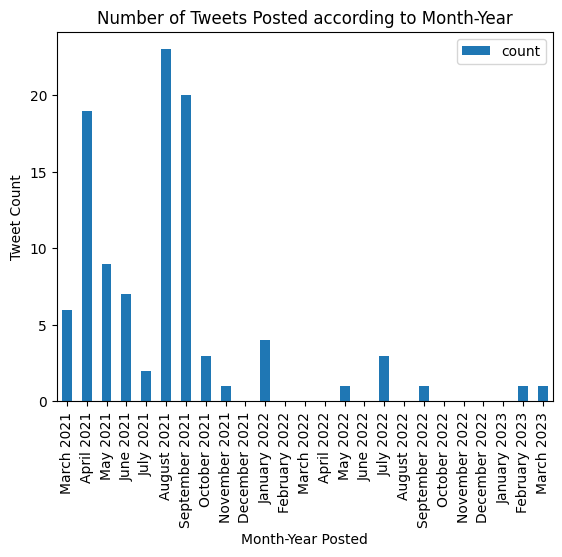
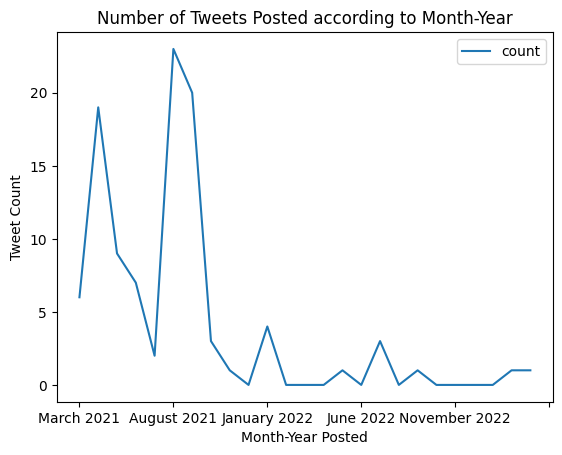

Question 4: From whom did most of the anecdotal or factual Tweets come from?
We first parsed the month and year of when the tweets were posted and converted the numerical month into its month name plus the year and stored it in one column
import calendar
df['Month Posted'] = df['Date posted'].str[3:5]
df['Year Posted'] = '20' + df['Date posted'].str[6:8]
df = df.astype({'Month Posted':'int'})
df = df.astype({'Year Posted':'int'})
df['Month Posted'] = df['Month Posted'].apply(lambda x: calendar.month_name[x])
df['Month-Year Posted'] = df['Month Posted'].astype(str) + ' ' + df['Year Posted'].astype(str)
Then using the newly formed column, we counted the frequency of tweets for each month-year and sorted them in chronological order while filling in 0 values for month-years that do not have tweets posted on them.
df_grouped = df.groupby('Month-Year Posted').size().reset_index(name='count')
idx = pd.date_range(min(pd.to_datetime(df['Month-Year Posted'], format='%B %Y')),
max(pd.to_datetime(df['Month-Year Posted'], format='%B %Y')), freq='MS')
df_all = pd.DataFrame({'Month-Year Posted': idx.strftime('%B %Y'), 'count': 0})
df_merged = df_all.merge(df_grouped, on='Month-Year Posted', how='left')
df_merged['count'] = df_merged['count_y'].fillna(0)
# Create a bar graph
fx = df_merged.plot(kind='bar', x='Month-Year Posted', y='count', title='Number of Tweets Posted according to Month-Year')
fx.set_xlabel("Month-Year Posted")
fx.set_ylabel("Tweet Count")
The results are shown on the succeeding bar and line plots where x-axis represents the Month-Years and the y-axis represents the number of tweets posted.
 